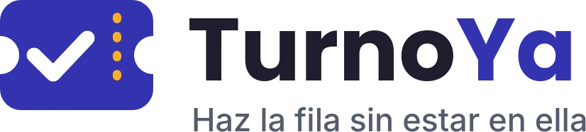
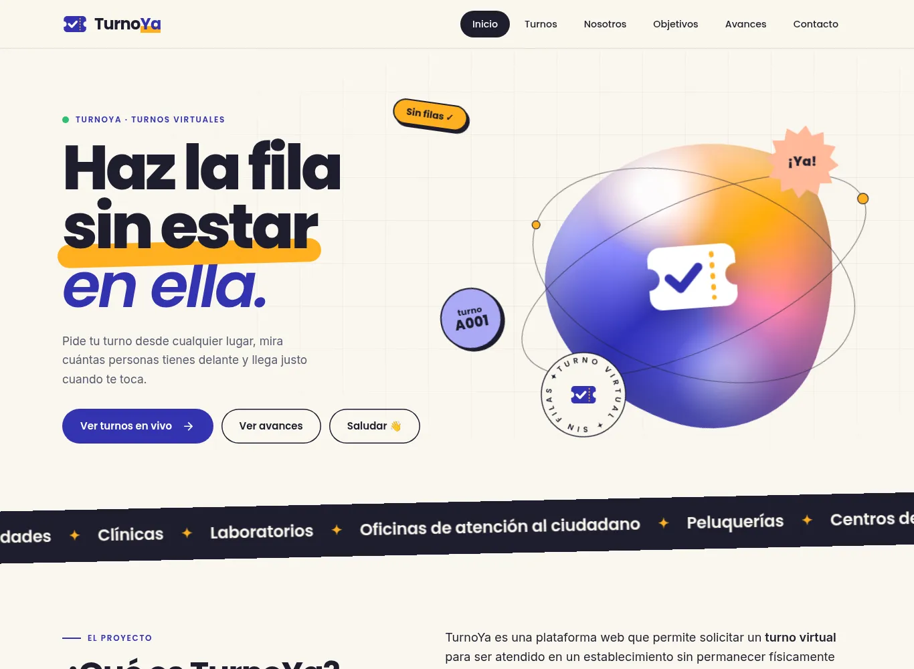
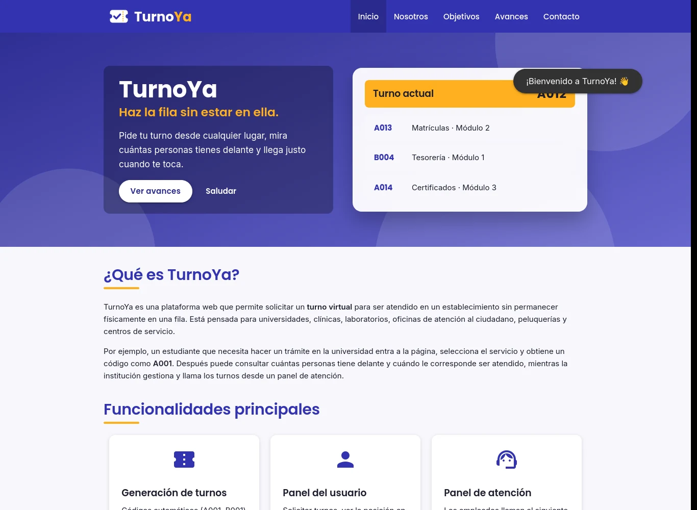

Primaria · títulos
Poppins
A012A012A012A012
- Geométrica y redondeada: un servicio moderno y amable.
- Se usa en el logo, títulos, botones, menú y códigos de turno.
07 — Estilo
Nuestra guía visual: tipografía, color, logo y slogan, y por qué elegimos cada uno.
Punto de partida
Estudiantes, adultos mayores, pacientes y personas con baja visión. Primero que todo, legible y accesible.
Entras, pides tu turno y te vas. La forma sigue a la función.
Esperar genera ansiedad. El diseño debe transmitir calma, orden y confianza.
Tipografía
A012A012A012A012
I l 1O 0no se confunden
Es más fácil de escanear para adultos mayores y personas con baja visión o dislexia, y es lo que el usuario espera en una app de servicios (Ley de Jakob).
--texto-2xlHero · fluidoHaz la fila--texto-xlSecciones · fluidoHaz la fila--texto-lg25 pxHaz la fila--texto-md20 pxHaz la fila--texto-base16 px · InterHaz la fila sin estar en ella.--texto-sm14 px · InterHaz la fila sin estar en ella.Color
Botones, enlaces, menú. Transmite confianza y calma, y baja la ansiedad de la espera.
Pedir turnoComplementario del índigo. Llama la atención como "prepárate" en un semáforo, sin parecer un error como el rojo.
Tu turno es el A012
#3333AFMarca · interactivo · 9.4:1#FFB020Acento · 9.0:1 con texto#2A2A8FHover#15153FFooter y bloques oscuros#FAF6EEFondo#ECECF9Estados activos#1E1E2E15.2:1 sobre papel#555B6E6.3:1 sobre papelTonos de apoyo del rediseño, solo para stickers, bloques y entidades (nunca botones):
#A9A9F5#FFB999#BFE8D4Todos los textos cumplen el contraste mínimo de WCAG (4.5:1).
Logo y slogan
El "papelito" de la fila de siempre, con muescas, línea punteada ámbar como corte y un check adentro.

Logo completo · fondos clarosHaz la fila sin estar en ella.
Corto, se dice en un respiro y tiene un juego de palabras fácil de recordar.Antes y después


El título del inicio ahora es el slogan y crece con la pantalla.
El fondo pasó de #F7F7FC al papel #FAF6EE.
La navbar ya no es una barra índigo: es transparente sobre el papel.
Páginas: se sumaron Turnos en vivo y esta guía de estilo.
Rediseño editorial
Más cálido y cercano; combina con el ámbar.
Crecen con la pantalla y se achican en el celular.
Le dan personalidad sin tapar el contenido.
Cinta, aparición al hacer scroll y conteo del progreso. Se apaga si el usuario pide menos movimiento.
En Turnos cada entidad tiene sigla y color de la paleta: un turno se reconoce como HC A012.
Colores y tamaños son variables CSS al inicio de style.css: se cambian una vez y se aplican a todo el sitio.